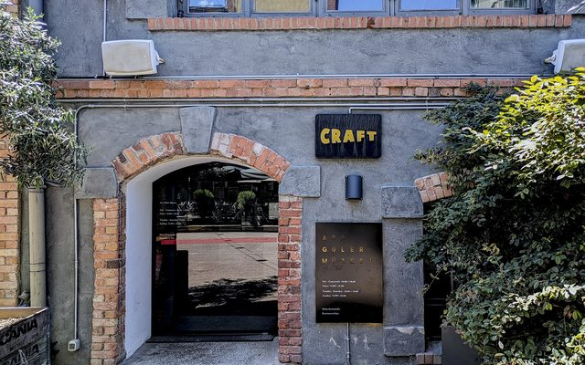
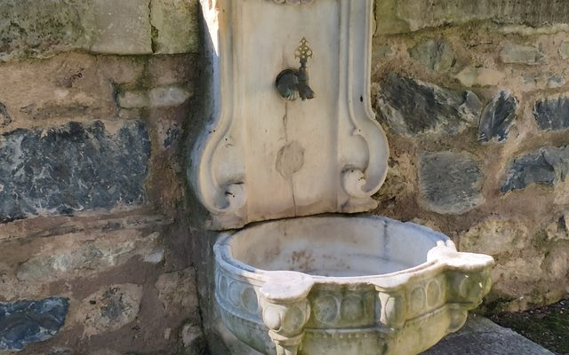
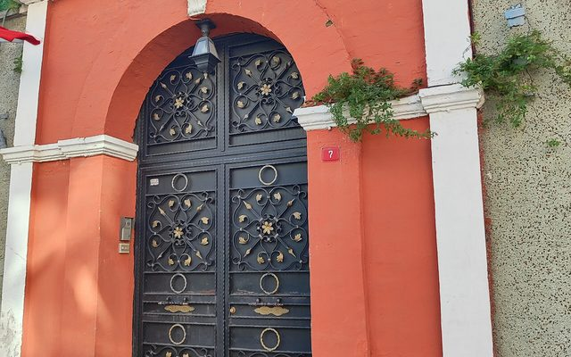
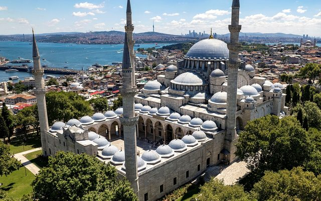

Kültür Varlıkları ガイドにはイスタンブールの89か所が載っています：52 博物館, 21 城・歴史的建造物, 14 宗教建築, 2 遺跡。以下に注目スポット、地図、全リストを掲載しています。
⭐ 注目スポット

1 · イスタンブール · 博物館イスタンブール考古学博物館
トプカプ宮殿の外庭、ギュルハネにあるイスタンブール考古学博物館は、オスマン帝国初の近代的博物館として創設されました。画家で考古学者のオスマン・ハムディ・ベイのもとで発展し、新古典主義様式の考古学博物館、古代オリエント博物館、征服王メフメト2世時代のチニリ・キョシュク（タイル張りの館）の3棟からなります。コレクションはオスマン世界全域から…

2 · イスタンブール · 博物館大宮殿モザイク博物館
スルタンアフメトのアラスタ・バザールのすぐ下にある大宮殿モザイク博物館は、ビザンツ皇帝が何世紀も暮らした大宮殿の最も印象的な遺構を展示しています。モザイクはかつて大きな列柱の中庭を飾っていたもので、古代末期のものです。狩りの場面、戦う動物、羊飼い、遊ぶ子どもたち、神話の生き物が、小さな石やガラスの欠片で絵画のように生き生きと描かれていま…

3 · イスタンブール · 博物館諸島博物館
2010年にビュユカダの旧格納庫に開館した諸島博物館は、プリンス諸島の物語を伝える市立博物館です。ビザンツ時代の流刑から、馬車の走る夏の暮らし、多文化な島の共同体まで、写真、品々、口述の歴史で紹介しています。島めぐりを始めるのによい場所です。
🗺 地図
📍 すべてのスポット (89)
博物館 (52)
イスタンブール考古学博物館博物館大宮殿モザイク博物館博物館諸島博物館博物館 アダム・ミツキェヴィチ博物館博物館
アダム・ミツキェヴィチ博物館博物館
アラ・ギュレル博物館博物館 アルテル博物館
アルテル博物館 軍事博物館博物館
軍事博物館博物館 アタテュルク博物館（シシュリ）博物館
アタテュルク博物館（シシュリ）博物館 アトラス1948イスタンブール映画博物館博物館
アトラス1948イスタンブール映画博物館博物館 アヤソフィア歴史体験博物館博物館
アヤソフィア歴史体験博物館博物館 ベヤズット浴場文化博物館博物館
ベヤズット浴場文化博物館博物館 ベイコズ・ガラスとクリスタル博物館博物館
ベイコズ・ガラスとクリスタル博物館博物館 ジェンデレ美術館博物館
ジェンデレ美術館博物館 エルギズ現代美術館博物館
エルギズ現代美術館博物館 フェネルバフチェ博物館博物館
フェネルバフチェ博物館博物館 フェティエ博物館博物館
フェティエ博物館博物館 フロリヤ・アタテュルク海の館博物館
フロリヤ・アタテュルク海の館博物館 ガラタ・メヴレヴィー修道場博物館博物館
ガラタ・メヴレヴィー修道場博物館博物館 ハフザ7月15日博物館博物館
ハフザ7月15日博物館博物館 ケマル・スナル博物館博物館
ケマル・スナル博物館博物館 キャーズム・カラベキル・パシャ博物館博物館
キャーズム・カラベキル・パシャ博物館博物館 無垢の博物館博物館
無垢の博物館博物館 メフメト・アーキフ・エルソイ記念館博物館
メフメト・アーキフ・エルソイ記念館博物館 ミニアトゥルク博物館
ミニアトゥルク博物館 ミュゼ・ガズハーネ博物館
ミュゼ・ガズハーネ博物館 オルハン・ケマル博物館博物館
オルハン・ケマル博物館博物館 パノラマ1453歴史博物館博物館
パノラマ1453歴史博物館博物館 ペラ美術館博物館
ペラ美術館博物館 ピエール・ロティ博物館博物館
ピエール・ロティ博物館博物館 ラフミ・M・コチ博物館博物館
ラフミ・M・コチ博物館博物館 レザン・ハス博物館博物館
レザン・ハス博物館博物館 サドベルク・ハヌム博物館博物館
サドベルク・ハヌム博物館博物館 サイト・ファイク・アバスヤヌク博物館博物館
サイト・ファイク・アバスヤヌク博物館博物館 サクプ・サバンジュ博物館博物館
サクプ・サバンジュ博物館博物館 サルト・ガラタ博物館
サルト・ガラタ博物館 トルコ・ワクフ書道芸術博物館博物館
トルコ・ワクフ書道芸術博物館博物館 トルコ・イスラム美術博物館（イスタンブール）博物館
トルコ・イスラム美術博物館（イスタンブール）博物館 トルコ・イシュ銀行博物館博物館
トルコ・イシュ銀行博物館博物館 ヤヒヤ・ケマル博物館博物館
ヤヒヤ・ケマル博物館博物館 ユルドゥズ陶磁器工場博物館
ユルドゥズ陶磁器工場博物館 サントラルイスタンブール・エネルギー博物館博物館
サントラルイスタンブール・エネルギー博物館博物館 チャタルジャ住民交換博物館博物館
チャタルジャ住民交換博物館博物館 イスラム科学技術史博物館博物館
イスラム科学技術史博物館博物館 イスメト・イノニュの家博物館博物館
イスメト・イノニュの家博物館博物館 イスタンブール海事博物館博物館
イスタンブール海事博物館博物館 イスタンブール航空博物館博物館
イスタンブール航空博物館博物館 イスタンブール・モダン博物館
イスタンブール・モダン博物館 イスタンブールおもちゃ博物館博物館ヒルミ・ナキポウル・カメラ博物館博物館ヒサルト生きた歴史とジオラマ博物館博物館カンディッリ地震博物館博物館イスタンブール空港博物館博物館
イスタンブールおもちゃ博物館博物館ヒルミ・ナキポウル・カメラ博物館博物館ヒサルト生きた歴史とジオラマ博物館博物館カンディッリ地震博物館博物館イスタンブール空港博物館博物館城・歴史的建造物 (21)
 アナドル・ヒサル城・歴史的建造物
アナドル・ヒサル城・歴史的建造物
アイナルカヴァク離宮城・歴史的建造物 ベイレルベイ宮殿城・歴史的建造物
ベイレルベイ宮殿城・歴史的建造物 ビンビルディレク貯水池城・歴史的建造物
ビンビルディレク貯水池城・歴史的建造物 ボズドアン水道橋城・歴史的建造物
ボズドアン水道橋城・歴史的建造物 ドルマバフチェ宮殿城・歴史的建造物
ドルマバフチェ宮殿城・歴史的建造物 ウフラムル離宮城・歴史的建造物
ウフラムル離宮城・歴史的建造物 キュチュクス離宮城・歴史的建造物
キュチュクス離宮城・歴史的建造物 乙女の塔城・歴史的建造物
乙女の塔城・歴史的建造物 マスラク離宮群城・歴史的建造物
マスラク離宮群城・歴史的建造物 ラーミ兵舎（ラーミ図書館）城・歴史的建造物
ラーミ兵舎（ラーミ図書館）城・歴史的建造物 ルメリ・ヒサル城・歴史的建造物
ルメリ・ヒサル城・歴史的建造物 テオドシウスの城壁城・歴史的建造物
テオドシウスの城壁城・歴史的建造物 トプカプ宮殿城・歴史的建造物
トプカプ宮殿城・歴史的建造物 イェディクレ要塞城・歴史的建造物
イェディクレ要塞城・歴史的建造物 地下宮殿（イェレバタン貯水池）城・歴史的建造物
地下宮殿（イェレバタン貯水池）城・歴史的建造物 ユルドゥズ宮殿城・歴史的建造物
ユルドゥズ宮殿城・歴史的建造物 チェンベルリタシュの円柱（コンスタンティヌスのフォルム）城・歴史的建造物
チェンベルリタシュの円柱（コンスタンティヌスのフォルム）城・歴史的建造物 イスタンブール・ガラタ塔城・歴史的建造物
イスタンブール・ガラタ塔城・歴史的建造物 シェレフィエ貯水池城・歴史的建造物フィルダム貯水池城・歴史的建造物
シェレフィエ貯水池城・歴史的建造物フィルダム貯水池城・歴史的建造物宗教建築 (14)

アフリダ・シナゴーグ宗教建築 アヤ・イリニ記念博物館宗教建築
アヤ・イリニ記念博物館宗教建築 アヤソフィア・ケビル・ジャーミー宗教建築
アヤソフィア・ケビル・ジャーミー宗教建築 ブルガリア聖ステファン教会（鉄の教会）宗教建築
ブルガリア聖ステファン教会（鉄の教会）宗教建築 エユップ・スルタン・モスク宗教建築
エユップ・スルタン・モスク宗教建築 フェネル総主教庁と聖ゲオルギオス教会宗教建築
フェネル総主教庁と聖ゲオルギオス教会宗教建築 カーリエ・モスク（コーラ）宗教建築
カーリエ・モスク（コーラ）宗教建築 ミフリマー・スルタン・モスク（エディルネカプ）宗教建築
ミフリマー・スルタン・モスク（エディルネカプ）宗教建築 リュステム・パシャ・モスク宗教建築
リュステム・パシャ・モスク宗教建築 パドヴァの聖アントニオ教会宗教建築
パドヴァの聖アントニオ教会宗教建築 スルタンアフメト・モスク（ブルーモスク）宗教建築
スルタンアフメト・モスク（ブルーモスク）宗教建築
スレイマニエ・モスク宗教建築 イムラホル・イリヤス・ベイ・モスク（ストゥディオス修道院）宗教建築
イムラホル・イリヤス・ベイ・モスク（ストゥディオス修道院）宗教建築 シェフザーデ・モスク宗教建築
シェフザーデ・モスク宗教建築